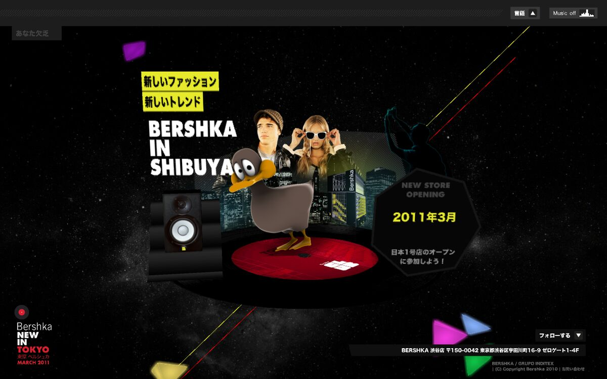

164-prod archive
Flash work from 164-prod.com, 2007–2011, playing again in the browser thanks to Ruffle, an open-source Flash emulator.

Bershka in Shibuya, Tokyo
- Click once for sound, then drag to orbit around the scene.
- Hold D and press K.
- Rebuilt from its source so Ruffle draws the 3D textures and camera correctly.